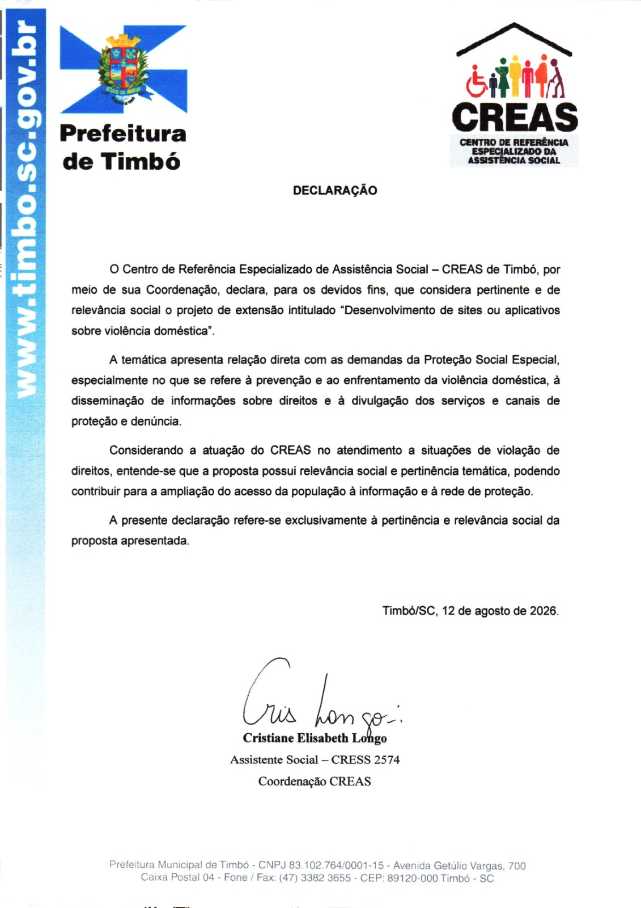

Transparência da Parceria
Este projeto conta com o reconhecimento formal do CREAS de Timbó. Publicamos aqui a declaração recebida, para que quem visita o site saiba que a articulação institucional é real.
Declaração de Pertinência e Relevância Social
Emitida pelo CREAS (Centro de Referência Especializado de Assistência Social) de Timbó, por meio de sua Coordenação, em 12 de agosto de 2026.

Transcrição do texto
DECLARAÇÃO
O Centro de Referência Especializado de Assistência Social – CREAS de Timbó, por meio de sua Coordenação, declara, para os devidos fins, que considera pertinente e de relevância social o projeto de extensão intitulado "Desenvolvimento de sites ou aplicativos sobre violência doméstica".
A temática apresenta relação direta com as demandas da Proteção Social Especial, especialmente no que se refere à prevenção e ao enfrentamento da violência doméstica, à disseminação de informações sobre direitos e à divulgação dos serviços e canais de proteção e denúncia.
Considerando a atuação do CREAS no atendimento a situações de violação de direitos, entende-se que a proposta possui relevância social e pertinência temática, podendo contribuir para a ampliação do acesso da população à informação e à rede de proteção.
A presente declaração refere-se exclusivamente à pertinência e relevância social da proposta apresentada.
Timbó/SC, 12 de agosto de 2026.
Cristiane Elisabeth Longo — Assistente Social (CRESS 2574), Coordenação CREAS.
O que este documento representa
É uma declaração de pertinência e relevância social — o CREAS de Timbó reconhece que o tema e a proposta deste projeto têm relação direta com o trabalho da Proteção Social Especial. Não é, por si só, um termo de parceria com responsabilidades mútuas definidas (modelo em nossa documentação interna do projeto), mas é a autorização/reconhecimento institucional formal que fundamenta a articulação citada em todo o site.